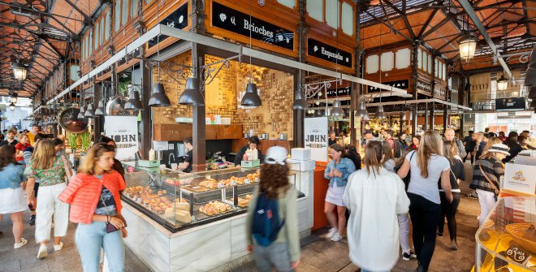
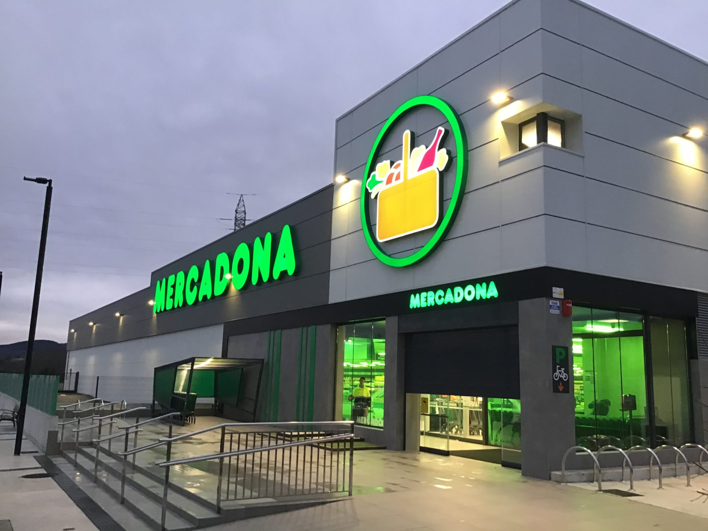
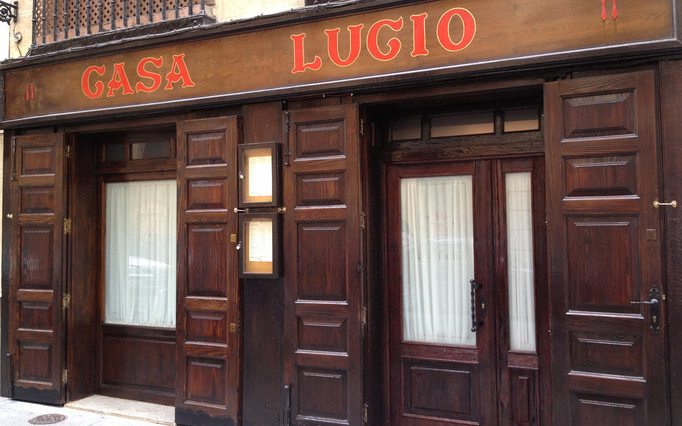
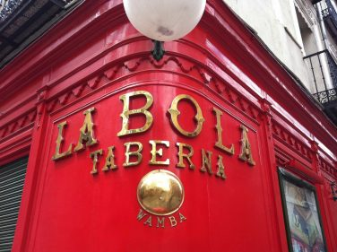

Dónde Comer Bueno y Barato en Madrid
Mercados y Supermercados más Económicos

Mercado de San Miguel
Un mercado icónico cerca de la Plaza Mayor, ideal para probar tapas y platos típicos a precios razonables.
- Ubicación: Plaza de San Miguel, cerca de la Plaza Mayor.
- Horario: De 10:00 a 00:00.

Mercadona
Uno de los supermercados más económicos de España, con una amplia variedad de productos frescos y de calidad.
- Ubicación: Múltiples ubicaciones en Madrid.
- Horario: De 9:00 a 21:30.
Restaurantes con Menús del Día Asequibles

Casa Lucio
Famoso por sus huevos rotos y su menú del día a un precio muy razonable.
- Precio menú: €12-€15.
- Ubicación: Calle de la Cava Baja, 35.

La Bola
Conocido por su cocido madrileño y menús económicos.
- Precio menú: €10-€14.
- Ubicación: Calle de la Bola, 5.
Lugares para Probar Comida Típica Madrileña

Sobrino de Botín
El restaurante más antiguo del mundo, famoso por su cochinillo asado.
- Especialidad: Cochinillo asado.
- Ubicación: Calle de Cuchilleros, 17.

Casa Labra
Famoso por sus croquetas y bacalao rebozado, un clásico madrileño.
- Especialidad: Bacalao rebozado y croquetas.
- Ubicación: Calle de Tetuán, 12.